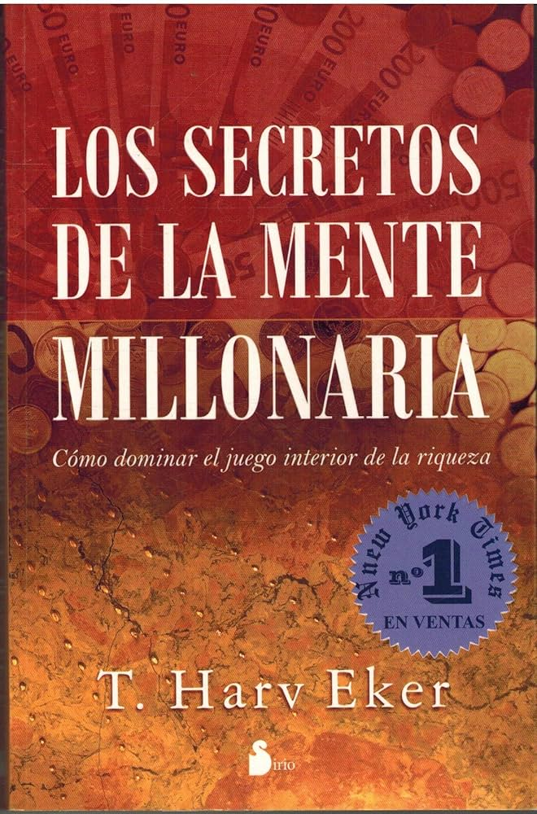
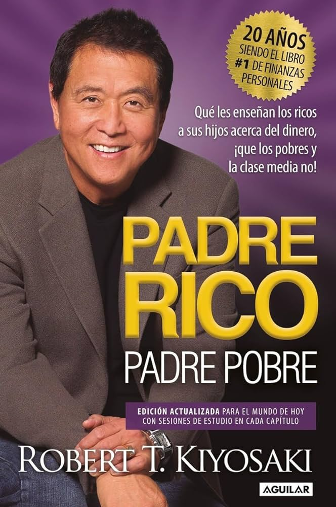
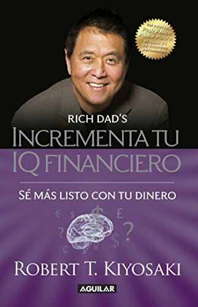
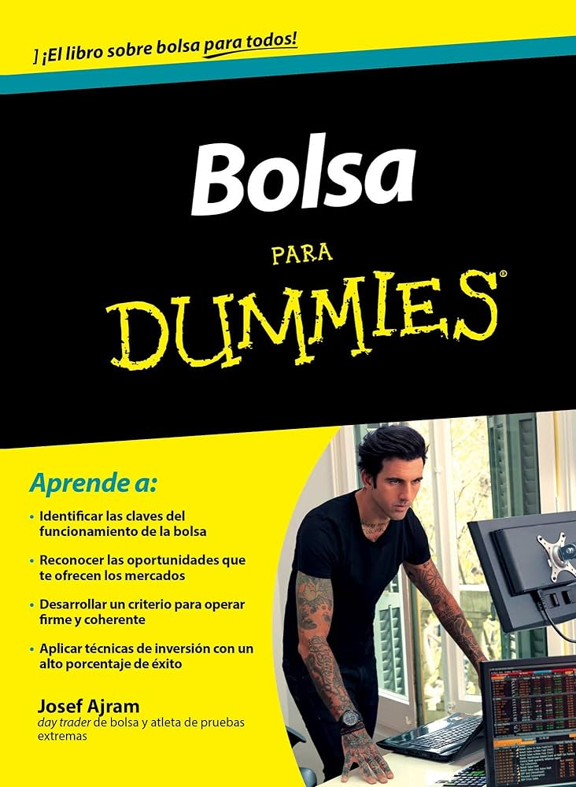
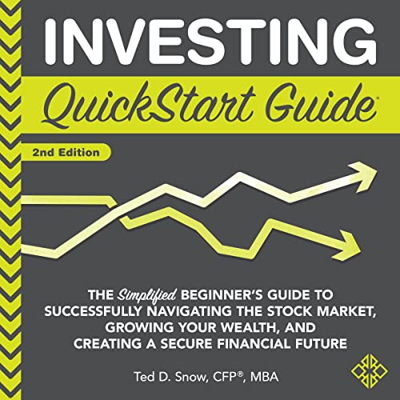

Como ya hemos mencionado anteriormente, la educación financiera es algo esencial para tener éxito en el mundo del mercado de valores. Es por esto, que a continuación se adjuntan los 5 libros (reconocidos internacionalmente) que consideramos son más útiles para crecer en este aspecto.
Los secretos de la mente millonaria

Este libro, escrito por T. Harv Eker, explora la psicología del éxito financiero. Eker presenta principios y estrategias para cambiar la mentalidad hacia la riqueza y el éxito financiero, ofreciendo consejos prácticos para gestionar el dinero y alcanzar la libertad financiera.Padre rico padre pobre

Robert T. Kiyosaki comparte en este libro las lecciones financieras que aprendió de su "padre rico", quien no era su padre biológico pero sí un mentor financiero, contrastando con las enseñanzas de su "padre pobre". El libro aborda conceptos clave como la educación financiera, la inversión y la mentalidad empresarial.Inteligencia Financiera

Escrito por Robert T. Kiyosaki y Sharon L. Lechter, este libro profundiza en el concepto de inteligencia financiera y cómo desarrollarla. Los autores explican cómo entender los estados financieros, hacer inversiones inteligentes y adquirir activos que generen ingresos pasivos para alcanzar la libertad financiera.Bolsa para Dummies

Este libro, parte de la serie "Para Dummies", ofrece una introducción accesible al mundo de la bolsa y la inversión en acciones. Escrito por Josef Ajram, aborda conceptos básicos como cómo funcionan los mercados financieros, cómo elegir acciones y cómo desarrollar una estrategia de inversión.Investing Quick-Start Guide

Investing QuickStart Guide, escrito por Ted D. Snow, proporciona una introducción concisa y accesible al mundo de la inversión. Este libro cubre una variedad de temas, incluyendo la planificación financiera, la selección de activos, la diversificación de cartera y las estrategias de inversión. Con un enfoque práctico y fácil de entender, el autor ofrece consejos y herramientas útiles para ayudar a los lectores a comenzar a invertir de manera inteligente y efectiva.